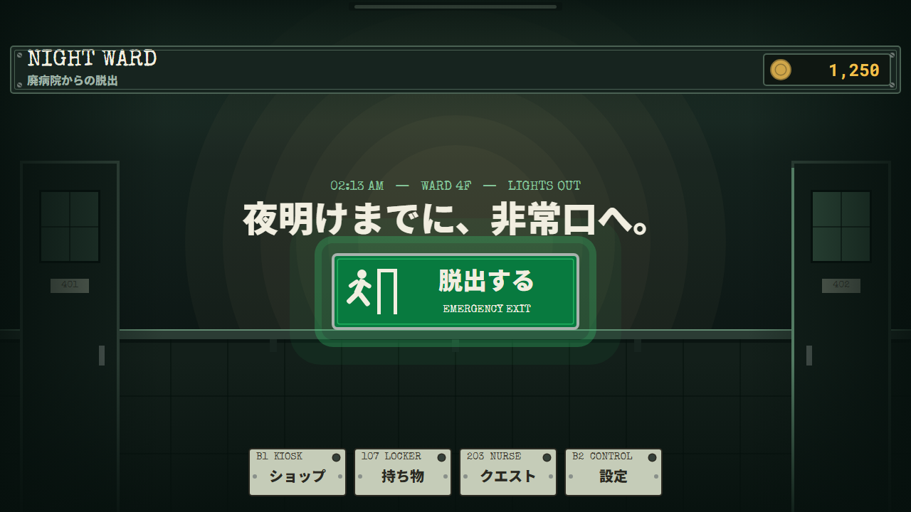
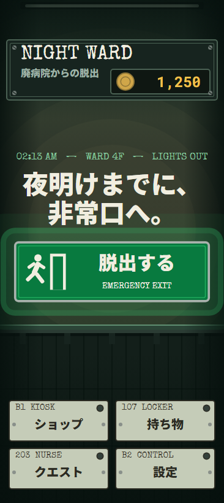
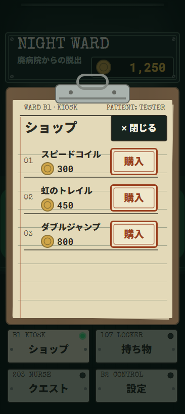
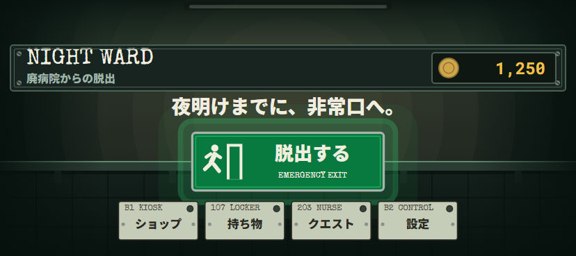
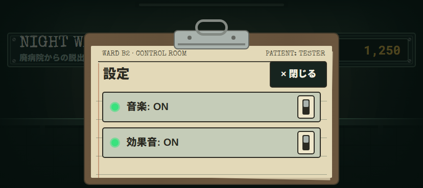
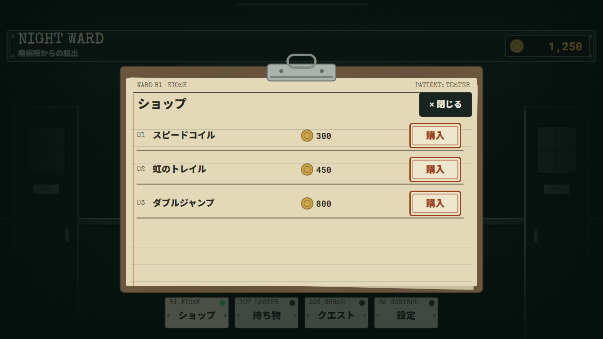
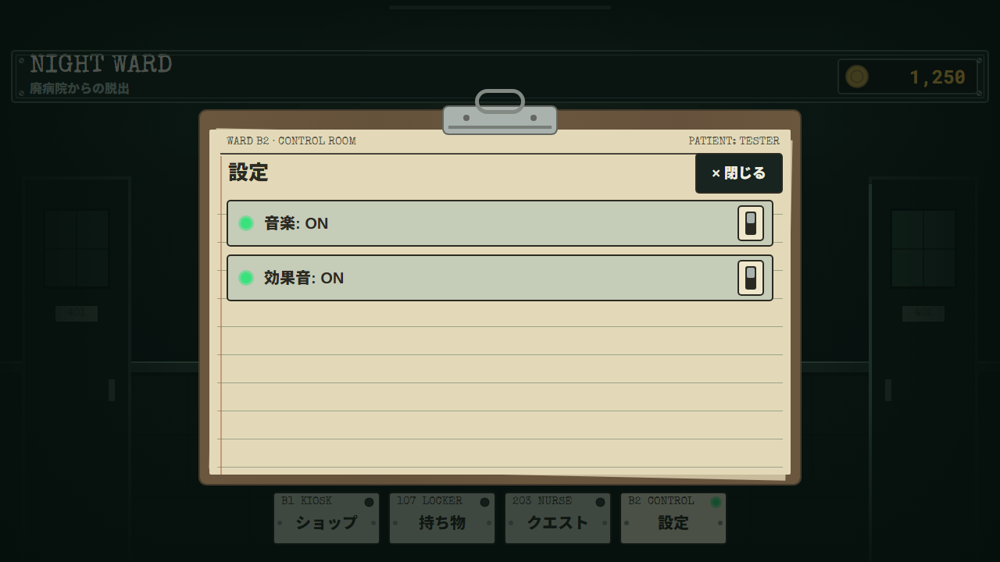
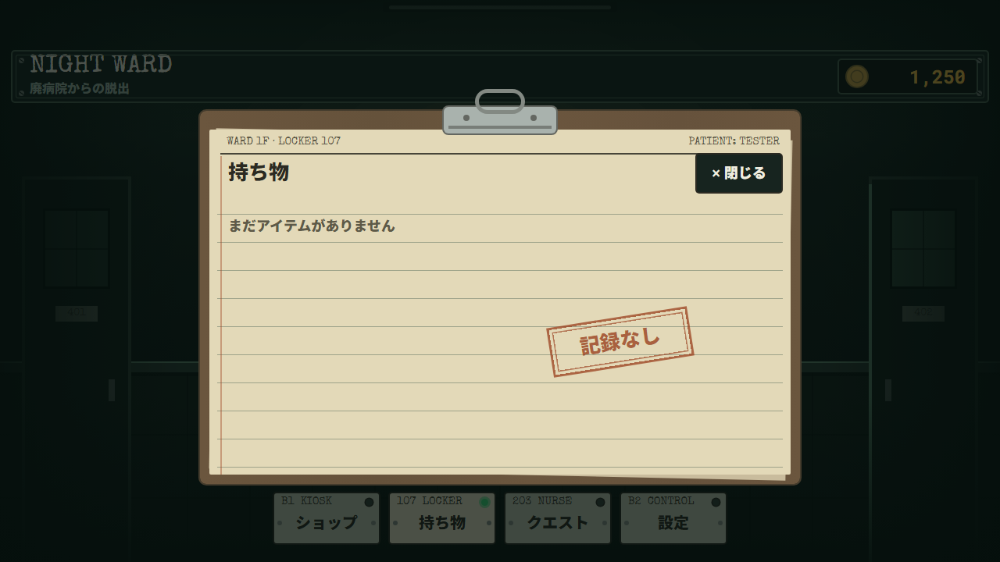
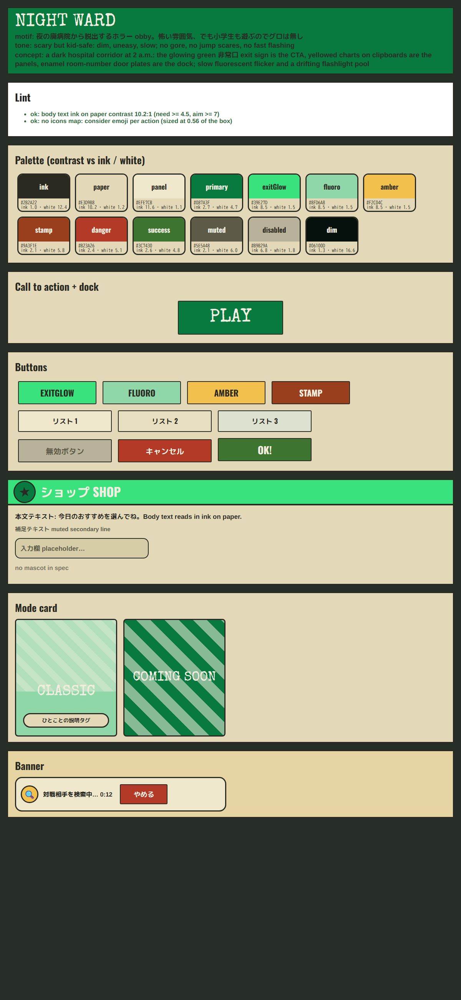

obby-rush のメインメニュー / ショップ / 持ち物 / クエスト / 設定を「夜の廃病院から脱出する」ホラー（小学生向け・グロ無し）に作り直した画面。
画像は Studio ではなく、Lune で実際の Luau（MainMenu + NightWardArt）を組み立て、その Instance ツリーを Roblox のレイアウト規則で描いたもの（obby-rush/design/render_all.sh）。
待機の動き（懐中電灯の漂い・非常口のにじむ光・蛍光灯のまれな暗転）は静止状態で描いている。各画像の HTML 版は同名の .html。
全 9 ビューの監査結果：コントラスト・48 px タッチ領域・トップバー下・画面外・ボタン重なり・文字の収まり、いずれも 0 件。








